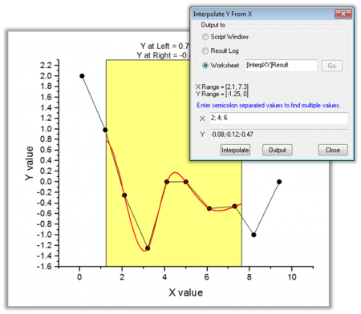

Minitool Interpolieren
Gadget-Interpolate
Übersicht
Das Minitool Interpolieren führt eine schnell Interpolation für den Bereich einer grafischen Datenauswahl ROI (Region of Interest) durch.
-
- 
Mit diesem Minitool können Anwender:
- Datenpunkte in einem rechteckigen Bereich auf einfache Weise mit der linearen, kubischen Spline- oder kubischen B-Spline-Methode interpolieren,
- den interpolierten Y-Wert eines gegebenen X-Werts schnell ermitteln,
- die interpolierten Werte im Skriptfenster, im Ergebnisprotokoll oder einem festgelegten Arbeitsblatt ausgeben.
Minitool Interpolieren verwenden
Um dieses Hilfsmittel zu verwenden, wählen Sie bei aktivem Diagramm Minitools: Interpolieren im Origin-Menü.
Dialogeinstellungen
Dieser Dialog kann über das Origin-Menü geöffnet werden, und zwar unter Minitools: Interpolieren, oder Sie können Einstellungen im Ausklappmenü der grafischen Datenauswahl auswählen.
| ROI-Feld |
X-Skala
-
Legt den X-Datenbereich für die grafische Datenauswahl fest.
-
Von
- Der erste Wert der X-Skala
-
Bis
- Der letzte Wert der X-Skala
-
Festgelegt (Verschieben durch graf. Datenauswahl nicht möglich)
- Die X-Skala wird fixiert, um eine Neuskalierung durch Verschieben der grafischen Datenauswahl (ROI) zu verhindern.
Toolname zeigen
- Legen Sie fest, ob der Name des Hilfsmittels oben in der grafischen Datenauswahl gezeigt werden soll.
Füllfarbe
- Legt die Füllfarbe der grafischen Datenauswahl (ROI-Feld) fest.
Linienfarbe der Interpolation
- Legt die Farbe der Interpolationslinie fest.
Linienbreite der Interpolation
- Legt die Breite der Interpolationslinie fest.
|
| In grafischer Datenauswahl in der Mitte oben zeigen |
Wählt die in der grafischen Datenauswahl oben anzuzeigende Größen.
-
Y links
- Der Y-Wert, der der linken Kante der grafischen Datenauswahl entspricht.
-
Y rechts
- Der Y-Wert, der der rechten Kante der grafischen Datenauswahl entspricht.
-
Y bei festgelegtem X
- Der Y-Wert, der einem X-Wert entspricht, den Sie im Bearbeitungsfeld X festlegen.
-
X
- Dieses Bearbeitungsfeld ist nur verfügbar, wenn das Kontrollkästchen Y bei festgelegtem X aktiviert ist.
|
| Optionen Interpolieren/Extrapolieren |
Methode
-
Legt die Interpolations-/Extrapolationsmethode fest. Optionen:
-
Linear
- Die lineare Interpolation ist eine schnelle Methode zum Schätzen eines Datenpunkts durch Erstellen einer Linie zwischen zwei benachbarten Datenpunkten.
-
Kubische Spline
- Diese Methode teilt die Eingabedaten in eine gegebene Anzahl von Stücken und passt jedes Segment mit einem kubischen Polynomial an. Die zweite Ableitung von jeder kubischen Funktion ist auf gleich Null gesetzt. Wenn diese Grenzbedingungen erfüllt sind, kann eine gesamte Funktion stückweise erstellt werden.
-
Kubische B-Spline
- Diese Methode teilt die Eingabedaten auch in Stücke auf. Jedes Segment wird mit den diskreten Bezier-Splines angepasst.
-
Akima-Spline
- Diese Methode basiert auf einer abschnittsweisen Funktion, die sich aus einer Reihe von Polynomialen zusammensetzt. Die Akima-Interpolation ist gegenüber Ausreißern stabil.
- Den zugehörigen Algorithmus finden Sie hier.
Anzahl der Punkte
- Legt die Anzahl der Interpolations-/Extrapolationspunkte fest.
Rand
-
Die Bedingung für die Grenze ist verfügbar, wenn unter Methode Kubische Spline ausgewählt ist. Optionen:
-
Natürlich
- Die 2-ten Ableitungen sind 0 an beiden Enden.
-
Not-A-Knot
- Die 3-ten Ableitungen sind stetig für den zweiten und zweitletzten Punkt.
Glättungsfaktor
- Die Option ist verfügbar, wenn unter Methode die Kubische B-Spline ausgewählt ist. Ein nicht-negativer Parameter, der die Glätte der interpolierten Kurve in der kubischen B-Spline-Interpolation festlegt. Der Faktor unterstützt Anwender dabei, die Balance zwischen Glättung und Treue zu den tatsächlichen Daten zu halten. Größere Werte ergeben glattere Kurven.
Grenzen festlegen auf
-
Legt die Grenze der Interpolationskurve fest.
-
Zur Kante des Rechtecks interpolieren
- Interpoliert bis zu den Kanten der grafischen Datenauswahl. Wenn der Bereich der grafischen Datenauswahl größer ist als der Quelldatenbereich, endet die Interpolation an den Kanten der Quelldaten.
-
Zur Kante des Rechtecks interpolieren/extrapolieren
- Interpoliert/Extrapoliert bis an die Kanten der grafischen Datenauswahl, ungeachtet des Quelldatenbereichs.
-
Datenpunkte
- Interpoliert zwischen den festgelegten Datenpunkten, die von dem Rechteck der grafischen Datenauswahl eingeschlossen sind.
-
Auf gesamte Achselänge interpolieren/extrapolieren
- Interpoliert/Extrapoliert auf den gesamtenSkalierungsbereich der X-Achse im Eingabediagramm, unabhängig von dem Datenbereich der Quelle.
-
Benutzerdefiniert
- Interpoliert/Extrapoliert auf einen benutzerdefinierten Datenbereich, festgelegt von den Werten Links und Rechts.
|
| Ausgabe in |
Legen Sie das Ausgabeergebnisblatt fest:
- Wenn Sie eine neue Ausgabe erzeugen, werden die Ergebnisse standardmäßig in [%H-Interpolate]Result (hier bezeichnet %H den Kurznamen des Quelldiagramms) ausgegeben, aber es können auch andere Mappen und Blätter festgelegt werden. Falls die Mappe und das Blatt nicht existieren, werden sie bei der Ausgabe erstellt.
- Alternativ können Sie auf die Ausklappschaltfläche
 rechts von Ergebnisblattname klicken und Blatt in Eingabemappe wählen. Das Bearbeitungsfeld wird mit [<input>]Result gefüllt. Wenn Sie eine neue Ausgabe erzeugen, werden die Ergebnisse in ein Blatt mit dem Namen Result in der Quellmappe ausgegeben. rechts von Ergebnisblattname klicken und Blatt in Eingabemappe wählen. Das Bearbeitungsfeld wird mit [<input>]Result gefüllt. Wenn Sie eine neue Ausgabe erzeugen, werden die Ergebnisse in ein Blatt mit dem Namen Result in der Quellmappe ausgegeben.
|
Ausklappmenü
Klicken Sie auf die dreieckige Schaltfläche  in der oberen rechten Ecke der grafischen Datenauswahl (ROI), um das Ausklappmenü zu öffnen: Die Menüoptionen umfassen:
in der oberen rechten Ecke der grafischen Datenauswahl (ROI), um das Ausklappmenü zu öffnen: Die Menüoptionen umfassen:
| Neue Ausgabe |
Ergebnisse werden in dem festgelegten Arbeitsblatt ausgegeben. |
| Neue Ausgabe für alle Kurven (N) |
Die Ergebnisse für alle Kurven in dem aktuellen Layer werden in dem festgelegten Arbeitsblatt ausgegeben (wenn es nicht leer ist, werden die Ergebnisse angehängt). |
| Neue Ausgabe für alle Layer (L) |
Die Ergebnisse für alle Kurven in allen Layern innerhalb des aktuellen Diagramms werden in dem festgelegten Arbeitsblatt ausgegeben (wenn es nicht leer ist, werden die Ergebnisse angehängt). |
| Zum Berichtsarbeitsblatt gehen |
Das Berichtsarbeitsblatt wird aktiviert. |
| Daten ändern |
Der Quelldatensatz wird ausgewählt. Diese Option kann nur verwendet werden, wenn es mehrere Kurven in dem Diagramm gibt.
- Per Standard ist der Modus Auto aktiviert. Wenn Auto aktiviert ist, wird die Zeichnungsauswahl gesteuert, indem auf eine Zeichnung im Diagrammfenster oder in der Objektverwaltung geklickt wird. Vor Origin 2019 unterstützte Origin nicht Auto. Um die Zielzeichnung/-daten in älteren Versionen zu ändern, müssen Sie eine Zeichnung im Ausklappmenü auswählen.
- Positionieren Sie das Häkchen vor einer bestimmten Zeichnung, um diese Zeichnung zu aktivieren.
- Klicken Sie auf Auswählen oder Mehr..., um den Dialog Diagramme auswählen aufzurufen und die Auswahl zu ändern.
|
| Auf gesamten Bereich der Zeichnung(en) erweitern |
Erweitert die grafische Datenauswahl auf den gesamten Diagrammbereich. |
| ROI-Position festlegen |
Legt die Position der grafischen Datenauswahl fest. |
| X/Y interpolieren |
Öffnet den Dialog Y von X interpolieren. Damit können Sie mehrere X-Werte eingeben, und das Hilfsmittel gibt die interpolierten Y-Werte für jeden einzelnen von ihnen aus. |
| Design speichern |
Speichert die Einstellungen als Design. |
| Als <Standard> speichern |
Speichert die Einstellungen als Standarddesign. |
| Design laden |
Lädt die Einstellungen aus einer Designdatei. |
| Einstellungen |
Öffnet den Dialog Interpolieren Einstellungen. |